|
WOW! So many gifts, awards, fun stuff!
thank you so much to everyone who has been making this fun! :)
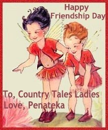
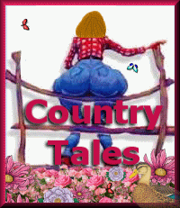
What an AWESOME honor!
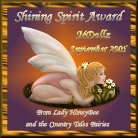
WOW!! I rec'd this yesterday 9-17!
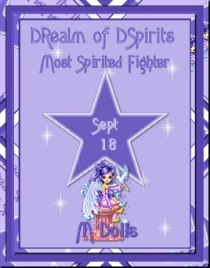
Quote from the letter I rec'd:
"Congratulations!!!!
It gives me the greatest pleasure to present to you; on behalf of The Site Fights Realms, all the Spirits, Fairies & Wee Ones, the Most Spirited Fighter Award for letting your spirit shine so brightly!!
Once a week we find the MSF of the Week to present with this award. The shining spirit you have shown to all of us here in TSF's makes the award yours this week..
Thank you for sharing it with us! Keep up the excellent work!!!
Please go here to see your award page...
http://www.thesitefights.com/spiritof/rab/msf/msf.htm
~~Spirited Huggs~~
**D'Rabbitha**
DRealm of DSpirit
http://www.thesitefights.com/spiritof/
Thank You! To everyone involved in the "MSF"!
Lookee, lookee what else I got!! :)
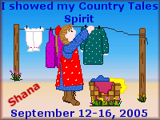
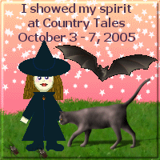
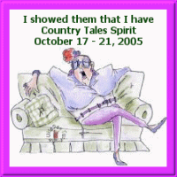
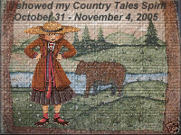
Some gifts below...
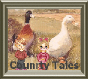
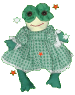
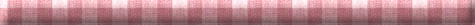
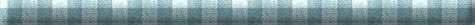
Click on a button below to navigate:
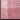
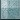
Backgrounds created by My Mom
|